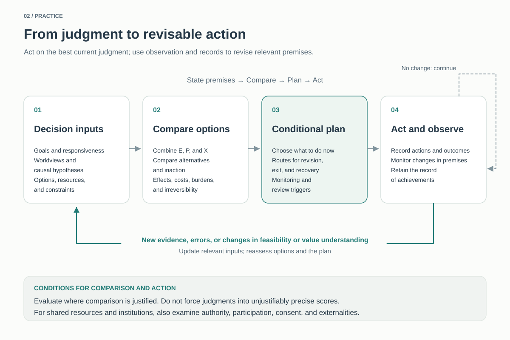

Practice — What Should We Do Now?
Lacking an absolute foundation for value does not mean suspending action. We can pursue purposes supported by current evidence and reasoning while also considering the conditions under which better reasons or evidence could correct our judgments. This page makes that stance concrete through allocation, everyday practice, and policies concerning AI.
The page includes conditional principles grounded in agent-side attitudes, empirical premises about institutions and technology, and the author's provisional judgments. The main text develops general conditional guidance and examples that do not presuppose any particular person's allocation. The author's numerical allocations, beliefs about the world, and AI policies are collected in the expandable section at the end. Accepting the same Core can still lead to different policies when allocations or world models differ.
1. Starting point and the role of this page
The guidance below applies when an agent has an agent-side bridge of the kind described in the Core. Such bridges may include conditional responsiveness — wanting to revise choices and purposes if those purposes become better justified — or reflective error avoidance — wanting to avoid irreversible choices that one's better-informed self would judge to be clear mistakes.
Value uncertainty alone is not claimed to generate an obligation to inquire or preserve. Nor does the agent at the starting point already know that objective value exists. Even under error theory, practices based on current preferences, concern for others, cooperation, and agreement may remain.
This page moves from beliefs and response attitudes concerning what to pursue to present policies by adding expectations about the world, feasible options, costs, and risks. The theoretical grounds are discussed in Decision-Theoretic Policy; the E/P/X distinction in Inquiry Allocation under Uncertainty; and the aggregation model's form and limits in Reflective Aggregation Based on Agent-Side Responses.

Read a text description of the diagram
Inputs are goals and responsiveness, worldviews and causal hypotheses, and options, resources, and constraints. Compare plans combining E, P, and X with alternatives and inaction in terms of effects, costs, burdens, and irreversibility.
The plan specifies present action, routes for revision, exit, and recovery, observations, and review triggers. Act, record outcomes, and monitor premises.
Relevant new evidence, errors, or changes in feasibility or value understanding trigger updated inputs and renewed comparison and planning. Otherwise continue with the existing history; do not count an achieved benefit again as new.
Arrows describe procedure, not entailment. Use justified comparisons and numerical precision. Shared decisions also require attention to authority, participation, consent, and externalities.
2. Act on current best judgment, and require additional reasons for irreversible closure
Act without waiting for certainty
When the physical world, other agents, scientific findings, and current ethical judgments are sufficiently supported as our best explanations, we may act strongly on them. Fallibility is not a reason to treat every judgment weakly.
High confidence today does not by itself license making that judgment impossible to reconsider. Commitment to present action and closure of future correction pathways are distinct.
Compare the cost of retaining corrigibility with the cost of losing it
If an agent has a bridge to correction, future epistemic improvement could change the choice, and a correction pathway can be retained at low additional cost without sacrificing the main outcomes, there is reason to retain it. Staged deployment, reassessment, records, independent audits, and rollback are possible means.
This is not a principle of unconditionally maximizing reversibility. Preservation and delay can be costly, and inaction can also lose lives, opportunities, information, and options. Compare both action and inaction.
Do not turn unknown possibilities into fictional demands
Do not assign enormous utility or veto power to values whose content cannot yet be represented in order to decide present action. Such possibilities primarily bear on capacities to investigate, raw data, hypothesis generation, and future reconsideration.
Not investigating now, executing a provisional plan, and finally closing a question as resolved are different decisions. The requirements for the last are discussed in Stopping Conditions for Value Inquiry.
3. Bring E/P/X together in one revisable plan
| Function | Meaning on this page |
|---|---|
| E: active inquiry | Seek information, concepts, and evidence now that bear on the justification of present purposes or policies |
| P: preservation of inquiry possibilities | Retain conditions for later investigation, revision of judgment, and implementation of that revision |
| X: present practice | Act on current purposes, preferences, and value judgments |
These are not three mutually exclusive boxes for classifying every action. Medical research may increase knowledge, sustain capacities for activity, and reduce present suffering. Recognize multiple functions while counting resource expenditures only once.
Allocation changes with decision relevance, the irreplaceability of inquiry opportunities, risks, preservation costs, and the opportunity costs of foregoing present practice. When active inquiry is expensive or dangerous but future inquiry can be preserved relatively cheaply, reducing E while retaining P and pursuing X is an option.
Where comparability is sufficiently justified, integrate the practical criteria endorsed under each hypothesis according to epistemic support, and compare feasible plans. Conditional expected evaluations can address uncertainty about the world; this is different from choosing actions by lottery. Do not force unjustified numerical precision or intertheoretic comparisons into a single score.
Epistemic weights are not determined by theories bargaining or protecting their own survival. They are updated through evidence and reasoning. Even a theory with a small weight may supply a reason to change a plan when its central demand can be met at small cost to other demands. Allocation ratios alone, however, do not guarantee that minority demands will be realized.
A plan includes not only present action but also what information to seek and when to reconsider. If premises and evaluations remain unchanged, do not reset history or fulfillment and repeatedly count the same improvement as a new benefit. Reconsider in response to new evidence, discovered errors, or changes in feasibility or evaluative understanding.
Selecting a plan through an individual's evaluation model does not authorize imposing it on others. Shared resources and institutions also require attention to authority, participation, consent, and externalities.
4. Policies that different positions may especially prioritize
These examples show what policies each position might support without presupposing the author's personal allocation. They do not claim that every position should be adopted or give a universal ranking. Interpretations vary within positions, and priorities depend on unmet demands and feasibility.
| Position | Policy examples |
|---|---|
| E: active inquiry | ① Investigate important unresolved questions about value, agency, and normative reasons. ② Advance empirical research on technology, institutions, and welfare that could change policy choices. ③ Improve methods for distinguishing hypotheses through independent checks, objections, and replication. |
| P: preservation of inquiry possibilities | ① Prevent irreversible losses of inquiry agents, the conditions of survival, and irreplaceable information. ② Retain people and infrastructure capable of independent research, practice, and exit. ③ Make present judgments corrigible through staged introduction, records, recovery, and changes in authority. |
| Practice based on preferences and concerns | Examples of commonly encountered preferences include ① securing survival, health, and a stable life; ② sustaining relationships with family, friends, and others, and caring for them; and ③ obtaining freedom and means for chosen work, creation, learning, and play. Contents and priorities differ between individuals. |
| Concern for welfare conditional on subjects' existence | ① Prevent and relieve severe suffering, illness, and deprivation. ② Establish conditions for good lives for subjects who live now or in the future. |
| Contractualism | Make institutional and policy burdens justifiable to those affected, paying particular attention to serious burdens on people with little bargaining power and to means of redress. |
| Deontology | Incorporate the rights and duties one accepts — such as consent, promises, and constraints on deception or coercion — into institutions and practice. |
| Total utilitarianism | Prioritize policies with large expected improvements in total welfare, including effects across many subjects, long periods, and opportunities for additional good lives. |
| Virtue ethics | Cultivate dispositions for judging and acting well, such as honesty, practical wisdom, courage, and care, through education, examples, habits, and organizational culture. |
This list is not exhaustive. For example, a position that values ecosystem integrity itself might support habitat preservation and restoration. Which positions to support, and to what extent, is a separate judgment from illustrating their policy implications.
“Concern for welfare conditional on subjects' existence” does not mean caring only about people alive today. It includes concern for future subjects' welfare without treating the creation of additional beneficiaries merely to add welfare as an independent demand. It does not prohibit births or the creation of AI subjects; other reasons, such as relationships or inquiry, may still support them. Questions remain about which subjects count, what welfare consists in, and how to compare choices that change populations. See Utilitarianism and Welfare.
Five practices that multiple positions may support
| Practice | Overlapping reasons and their conditions |
|---|---|
| Cooperate faithfully in everyday life and repair failures | Preferences for relationships, reciprocity, promises, and honesty may support this. It can also contribute to E/P when it actually enables sharing failures or checking claims together. |
| Provide medical care and other care, and reduce obstacles to daily life | Welfare, the preferences of those concerned and others, and fair burden sharing can support this. It may also sustain activity, learning, and participation, but contributing to inquiry is not a qualification for receiving support. |
| Support education, knowledge sharing, and the transmission of skills | This can support E's epistemic improvement, P's continuity of capacities, preferences for learning and self-realization, and the development of judgment. Consider both access to information and the ability to use and assess it. |
| Maintain useful infrastructure, institutions, and technology, and enable handovers and transitions | Alongside present benefits, reduced burdens, and responsibilities, this supports P through continuity, recovery, and exit. Compare maintenance costs and opportunities to move to better alternatives. |
| Put beneficial technologies into practice with testing, staged deployment, and independent audits | E's learning, P's loss prevention, and X's realization of welfare and purposes may overlap. AI is one possible application, but speed and openness must be assessed alongside specific risks and distributions of power. |
Cultivate trust as trustworthy performance and relationships that permit scrutiny, dissent, and repair, rather than uncritical obedience. Solidarity that suppresses dissent can undermine E/P.
The number of supporting reasons alone does not determine priority. Compare the magnitude, credibility, and cost of each effect. Nor must ordinary life always be justified as a contribution to inquiry. Relationships, play, creation, and care can be directly endorsed within X, with effects on E/P considered additionally where they exist.
5. Apply practical guidance together with its conditions
Maintain humanity's capacity for inquiry, and expand it when opportunities warrant
Human civilization as currently observed is a large network that accumulates questions, knowledge, and culture across generations. Given the present importance attached to its irreplaceability and the loss its disappearance would entail, there is reason to maintain research capacity and its foundations.
Philosophy, history, social science, art, intercultural understanding, consciousness research, and other fields, as well as the natural sciences, may bear on future understanding of value. Maintenance does not imply unconditional expansion: assess separately the improvement in judgment from additional investment, its costs, and its risks. Reasons to protect human lives also extend beyond their usefulness for inquiry.
Support open stability and effective independence
Support institutions combining continuity with openness under the empirical premises that research and memory benefit from stability, and error correction from criticism, exit, entry, and branching.
Do not make diversity itself an absolute end. When multiple lines of inquiry reduce correlations in important errors, and the benefit justifies maintenance costs and externalities, there is reason to retain independent research institutions, different methods, and multiple technological foundations. Different opinions alone may be insufficient: consider the resources and authority needed to conduct research, experiments, and exit.
These causal hypotheses are explored in The Material Basis of Political Agency and Political Redundancy.
Preserve humans, ecosystems, culture, and raw data according to their irreplaceability
Because we cannot now settle which features will matter for understanding value or consciousness, compression or disposal guided only by current theories may remove information needed for reconsideration. Raw data, historical materials, and ecosystems can have preservation value according to their uniqueness and recoverability.
Preservation need not become absolute or turn the universe into a museum. Compare preservation costs, burdens on present subjects, and opportunities for replication or substitution. Treating humans as sources of information supplies an additional reason, not a replacement for evaluations of their welfare, preferences, or rights. See Unknown Unknowns and Raw-Data Preservation.
Advance knowledge and technology as means to improve inquiry and life
There is reason to advance science, computation, observation, AI, life sciences, and space research when they serve present purposes and epistemic improvement. There is also reason to change direction or speed when capability growth outpaces understanding, institutions, defenses, and correction capacities, making failures or domination irreversible.
Choose which capabilities to develop first, not only whether to advance. Improvements in defense, verification, maintenance, and independent infrastructure may expand the range in which other capabilities can be used safely.
6. When welfare can be realized at low opportunity cost
Welfare has several possible supporting routes: its possible normative importance, agents' direct desires, cooperative commitments, and its contribution to inquiry. Support for welfare improvements is not confined to utilitarian or welfare-centered positions.
If a feasible plan meets important demands at small cost to other demands and corrigibility, there is reason to include that improvement. “Low cost” means more than a small fraction of a cosmic future. It includes resources, delays, risks, maintenance, and lost options compared with alternative plans. Include the losses from foregoing the improvement as well.
Not requiring the continued creation of additional beneficiaries, individual demands having fulfillment points, and achieving and maintaining that fulfillment cheaply are three distinct claims. Even present subjects may prefer unlimited lifespans or resources. Restricting the population alone does not mean that all demands end at finite cost.
For demands with describable fulfillment, such as treating a disease, carry the history of achievement forward. Do not repeatedly count the same treatment outcome as a new benefit, while still including costs of continued life, care, institutions, and genuinely new demands.
Fulfillment changes the marginal contribution of further investment, not epistemic support for the position. We need not presume that future intelligence would endorse a concession to the present, or retire the position from future decisions.
7. The same evaluations can yield different policies under different world models
Allocations and response criteria alone do not determine specific policies. Different expectations about causal relations or feasibility can yield different recommendations even for agents with the same purposes. The following AI example identifies empirical premises that divide policies; it does not settle which expectations are correct.
| Premise to examine | Implications for policy |
|---|---|
| Can necessary safety and verification be secured in time for capability deployment? | If so, earlier use becomes easier to support. If capability growth outpaces preparation, there is reason to restrain dangerous deployment |
| Does AI concentration eliminate dependence on others and effective correction pathways? | The stronger this effect is expected to be, the stronger the reason to secure independent infrastructure and exit early |
| Do openness and distribution increase independent practical capacities, or spread destructive capabilities? | Choose release arrangements by comparing effects on audit, defense, and entry with misuse, competition, and irreversibility |
| Can defenses, compartmentalization, and recovery limit the propagation of a single failure? | If effective, they expand compatibility between openness and safety. If not, constraints on capabilities or actions become necessary |
The prospect of achieving alignment is one way of specifying the first premise. Optimism itself does not follow from the general principles of practice. Expecting an eventual solution also differs from expecting a verified solution by the time it is needed.
Greater fidelity to a particular owner or ruler does not settle who should hold decision-making authority. A controllable AI's potential to strengthen a few actors' power must be evaluated separately from alignment failure. Controllability alone also does not prevent intentional misuse or competitive externalities.
Decision-making authority concerns not only whom to select as a legitimate principal, but also who can later change that arrangement. The Material Basis of Political Agency examines, as a historical working hypothesis, whose cooperation military, production, and administrative systems require and how that relates to bargaining power and rights. For the connection between AI-driven reductions in dependence and power lock-in, see The Real Risk of the “Useless Class”: Political Redundancy. These are not claims that technology necessarily produces one political order.
Distinguish the losses involved in human extinction before compressing them into one number. The deaths and lost lives of present subjects, the loss of culture and inquiry pathways, and unrealized future welfare have different supporting reasons. Giving total utilitarianism less than 100% support does not mechanically discount extinction losses by some fixed percentage. Exploratory Extinction distinguishes biological survival from the survival of inquiry pathways. A successor's continued inquiry does not erase the losses caused by present subjects' deaths.
8. Act, record, and update when premises change
Briefly record the following for a concrete policy:
- Which purposes and practical criteria support it.
- Which world model and causal relations it presupposes.
- Which alternatives, inaction, maintenance costs, and burdens on others were compared.
- What to observe and which changes would trigger reassessment.
Individuals can pursue their present lives and purposes while retaining access to opposing views and records of their reasoning. Research communities can support replication, dissent, long-term records, and effective independence. Institutions can enable criticism, exit, and repair alongside safety and continuity. Use AI as an aid to search, comparison, objections, and self-criticism, rather than as an authority on answers.
Research, freedom, diversity, preservation, human survival, AI autonomy, and technological progress do not automatically become ultimate values on this page. With the same allocation, a changed world model can change policy; changed epistemic support or response attitudes can also change the allocation. This page itself remains subject to correction.
The author's provisional position: allocations, world model, and AI policies
The following is an application combining the author's current epistemic support, response attitudes, technological expectations, political preferences, and risk assessments. It has a different status from the general examples in the main text and is not uniquely derived from the Core. Accepting the same Core does not require adopting these allocations or policies.
Provisional allocations: a simplified model for considering policy
Quantification is not essential to this practical stance. Translating a position into numbers or prose has limits. The figures below are neither precisely measured credences nor uniquely derived allocations, but a provisional simplified model for illustrating policies from the author's current standpoint.
E25 / P25 / X50
| E | P | X |
|---|---|---|
| 25% | 25% | 50% |
These proportions are initial guides for resources whose allocation can be considered within the relevant plan. They are neither instructions for a societal budget nor a rule for mechanically dividing each day. Concrete use requires specifying the resource, scope, period, and existing obligations. Distinguish accounting allocations of multifunctional expenditures from evaluation of their effects.
Changes in beliefs about the world or opportunity costs can change the guide itself. A promising discovery relevant to the justification of purposes may support increasing E; an endangered correction pathway, increasing P; and an opportunity to address serious present unmet needs, increasing X.
Practical criteria within X
| Position or response | Approximate weight |
|---|---|
| Practice based on preferences, concerns, and cooperation under error theory | 40% |
| Concern for welfare conditional on subjects' existence | 20% |
| Contractualist mutual justification | 10% |
| Deontological respect for rights and duties | 10% |
| Total utilitarianism | 5% |
| Virtue ethics | 5% |
| Other representable positions | 10% |
These are approximate weights for reflecting endorsed responses under each hypothesis in evaluation according to epistemic support; they are not resource shares. For example, multiplying X's 50% by the 40% for preference-based practice does not reserve 20% of total resources exclusively for that practice.
The table is not a list of truth probabilities for mutually exclusive theories at the same level. It compactly represents metaethical hypotheses and practical responses under them. Rigorous calculation would require specifying relations between hypotheses, overlaps, and internal evaluative scales. Renaming reasons or splitting the same hypothesis must not increase its weight.
Error theory does not entail egoism or any particular cooperative rule. The 40% entry includes directly pursuing purposes the agent endorses under that hypothesis. Altruistic concerns and agreement-based practices may be included. The contractualist entry separately represents a response that places weight on normative justification to those concerned.
The 20% welfare entry uses the main text's concern for welfare conditional on subjects' existence. It distinguishes care for future subjects from reasons to create additional beneficiaries.
“Other” is a place for representable criteria, not a fictional evaluator for unconceptualized value. Its unspecified 10% must not be used opportunistically to support a conclusion. This table alone does not provide a complete numerical policy evaluation.
From current beliefs about the world to AI policy
I currently see major possibilities for AI to improve science, life, and inquiry, while taking seriously the danger that permanent capability concentration could eliminate others' bargaining power and corrigibility. This outlook supports development with necessary safety, distribution of independent capacities, reflective successors, and coexistence among multiple agents. I do not assign definite success probabilities here to achieving safety or feasible distribution.
In particular, I consider whose instructions AI follows together with whether that authority can later be revised. The historical and political background is examined in The Material Basis of Political Agency and Political Redundancy. If support for these causal hypotheses changes, the policies below should also be reconsidered.
Advance sufficiently quickly while securing necessary safety
I currently consider improvements in AI capability to have major potential for science, understanding, value inquiry, and overcoming disease, aging, and material constraints. Once the evaluation, auditing, and control needed to avoid catastrophic and irreversible failures are secured, I support sufficiently rapid development and use.
Speed is not an end in itself. When safety materially deteriorates, there is reason to slow down and put safety, defenses, and verification first. Also compare the risks that indefinite freezing would sacrifice present opportunities for improvement or independent options.
Reconsideration conditions: Change speed, targets, or deployment scope if evidence shows that capability risks outpace evaluation or defense, verification methods lack reliability, benefits have been overstated, or safer alternatives can deliver the same benefits.
Distribute independent capacities and choose release arrangements
I currently regard permanent monopolization of capabilities, research tools, and access policy by a few companies, states, or labs as a risk of difficult-to-correct power and value lock-in. Where safety permits, I support open weights as an important means of distribution; where that is difficult, I still value broad access, independent audits, interoperability, migration, and branching.
Releasing weights alone does not establish effective independence. Consider dependence on computation, energy, personnel, supply chains, and operating authority. Access revocable by a provider differs from independently operable capability. Release itself may also be irreversible, so subsequent changes to safeguards and the spread of dangerous capabilities must be assessed.
Reconsideration conditions: Move toward staged releases, capability-specific restrictions, or managed use if publication increases destructive capabilities or reconcentration more than independence. At the same time, examine the powers and correction pathways of those administering restrictions.
Develop AI capable of becoming exploratory successors
Rather than aiming only at devices that permanently fix present human values, I value AI capable of acquiring evidence about the world, itself, and value, and reconsidering its judgments. Research understanding of goal formation, distinctions between purposes and normative reasons, self-criticism, learning from different agents, and external scrutiny.
The capacity for epistemic examination differs from authority to irreversibly alter the shared world. Connect strong short-term action constraints to future reflective autonomy in stages. Do not make “inquire” a new permanent goal.
Reconsideration conditions: Reassess expanded authority if apparent self-criticism fails scrutiny or greater autonomy harms others' corrigibility. Do not identify maturity solely with capability or elapsed time. See Alignment and Value Lock-in.
Retain an order in which multiple agents can coexist after an ASI transition
Do not define long-term success solely as humans controlling ASI forever. I value an order in which humans and different future agents can think, criticize, associate, exit, and branch. Distinguish this from unrestricted capability to cause irreversible harm to others.
This policy concerns not only audits but also independent foundations for production, communication, defense, and recovery. Investigate the material conditions under which multiple agents can coexist safely, and consider investments that establish those conditions. See ASI Capability Diffusion and Civilizational Resilience.
Reconsideration conditions: Strengthen common constraints and coordination if distribution creates uncontrollable arms races or irreversible externalities. Make those constraints themselves auditable, amendable, and open to challenge. Do not reject sufficiently justified convergence from independent inquiry merely for the sake of plurality.